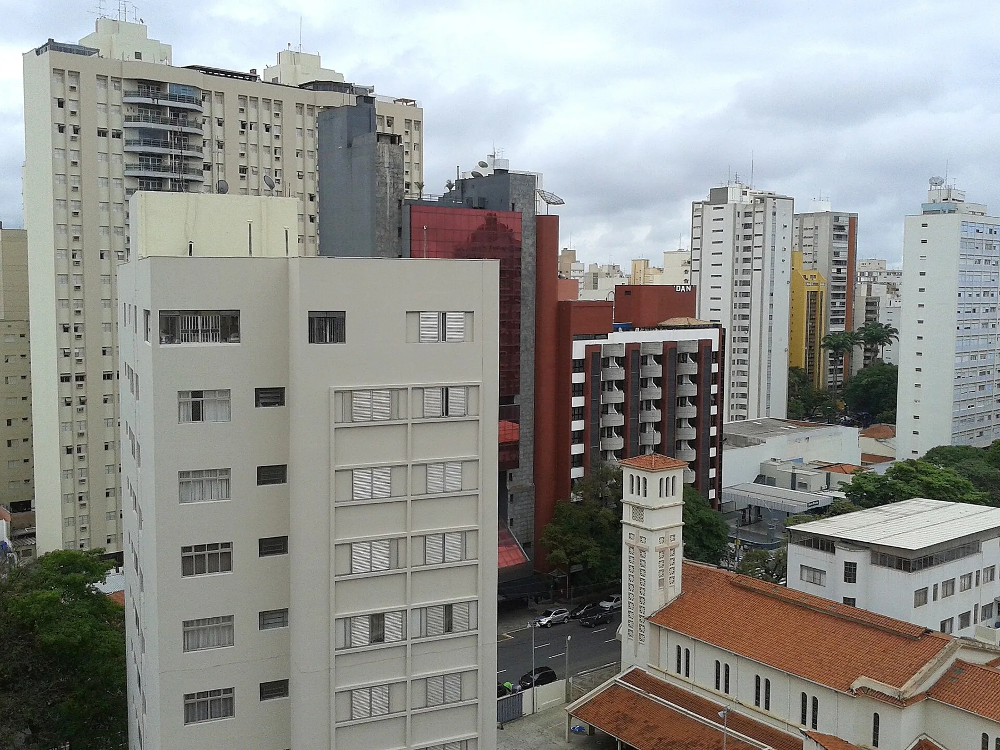

Tratamentos odontológicos completos
Seu dentista no Cambuí desde 2009
Sua saúde bucal em boas mãos, no coração do Cambuí.
Agendar consulta · (19) 3254-0187Odontologia avançada, precisa e de confiança

A clínica
Cuidado odontológico de confiança no coração do Cambuí
Existe uma clínica odontológica na Av. Norte-Sul, no Cambuí, desde 2009. Hoje ela é dirigida pela Dra. Beatriz Lemos, especialista em implantodontia e reabilitação oral, que acompanha você pessoalmente desde a primeira consulta.
Praticamos odontologia minimamente invasiva: manter os seus dentes naturais sempre que possível e explicar cada opção com clareza antes de começar. O raio-x digital é feito na própria clínica, e para urgências há um telefone que atende 365 dias por ano.
- 2009
- Clínica na Av. Norte-Sul
- 4,9
- Nota dos pacientes no Google ↗
- 365
- dias por ano, urgências no (19) 99140-0187
Um nome na porta
Uma clínica com nome na porta
Na entrada da Av. Norte-Sul há uma placa com o nome da Dra. Beatriz Lemos, dentista registrada no Conselho Regional de Odontologia de São Paulo.
A clínica tem alvará da Vigilância Sanitária de Campinas. Quem atende você é quem tem o nome na porta.

Nossa filosofia
Preservar o que é seu
Inspirada no kintsugi, a arte japonesa de consertar a cerâmica quebrada com um fio de ouro em vez de jogá-la fora, a clínica sempre tenta salvar o dente natural antes de pensar em substituí-lo. A peça não perde o valor: o conserto vira parte da história dela.
Como nenhum material se compara ao que a natureza deu a você, cada tratamento é planejado com calma, explicado passo a passo e feito com precisão. Bem consertado, continua sendo seu.
Por isso praticamos odontologia minimamente invasiva: fazemos o diagnóstico com raio-x digital na própria clínica, explicamos o que vemos e quais são as opções, e entregamos o orçamento por escrito antes de começar. Sem pressa e sem surpresa, para você decidir com toda a informação.
Tratamentos
Tudo o que o seu sorriso precisa
Atendemos pacientes deCambuíTaquaralGuanabaraNova CampinasCasteloBarão GeraldoSousasValinhosVinhedo
Depoimentos
O que os pacientes dizem
A confiança dos pacientes faz parte do nosso jeito de entender a odontologia.
Avaliações originais no Google
G 4,9 · Google
Onde estamos
Dentista no Cambuí
Av. Norte-Sul, 1.420, sala 6 · 13025-320 Cambuí · Campinas
O mapa abre no Google Maps, que usa os próprios cookies.